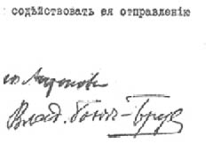
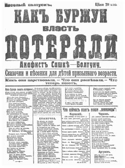

BÖLÜM IX

BAŞARI


Emir. Sayı 1
Pulkovo Birliklerindeki askerlere
13 Kasım, 1917. Sabah saat 9’u 38 dakika geçe.
Pulkovo birliklerine bağlı askerler yaptıkları korkunç bir savaştan sonra karşıdevrimci kuvvetleri bütünüyle bozguna uğratmışlar, bu kuvvetler düzensizce yerlerini bırakarak, Çarskoye Selo’nun gerisindeki Pavlovsk II ve Gaçina’ya kadar çekilmişlerdir.
İleri birliklerimiz Çarskoye Selo’nun kuzey doğu ucuyla Aleksandrovskaya İstasyonunu ele geçirmişlerdir. Kolpinno birlikleri solumuzda, Krasnoye Selo birlikleri sağımızdaydı.
Pulkovo kuvvetlerine Çarskoye Selo’yu ele geçirmelerini, giriş noktalarını, özellikle Gaçina yönüne düşen girişleri kuvvetlendirmelerini emrettim.
Aynı zamanda Pavlovskoye’ye geçmelerini ve orayı da ele geçirmelerini, böylece Güney yanını kuvvetlendirmelerini ve demiryoluna Dno’ya kadar hâkim olmalarını emrettim.
Askerler elde ettikleri mevzileri, siper kazmak ve öteki savunma işlerini yapmak suretiyle kuvvetlendirmek için gereken bütün tedbirleri almalıdırlar.
Kolpinno ve Krasnoye Selo Birlikleri ile ve aynı zamanda Petrograd’ın savunması için Başkomutanlık Kurmayı ile irtibat kurmalıdırlar.
imza :
Kerenski’nin devrim düşmanı birliklerine karşı savaşan
bütün kuvvetlerin başkomutanı
Yarbay MURAVİOV
Salı sabahı. Nasıl oldu bu iş? Daha iki gün önce Petrograd, sokaklarda başıboş gezen, lidersiz çetelerle doluydu; yiyecekleri yoktu, topları yoktu, bir planları yoktu. Disiplinsiz ve örgütsüz Kızıl Muhafızları, başlarında subay olmayan askerleri; Kerenski’nin bombardımanına ve Kazak süvarilerine karşı koyacak ve onları bozguna uğratacak kadar kendi seçtiği yüksek komutasına bağlı disiplinli bir ordu haline getiren acaba neydi? (1)
Ayağa kalkan halk, askerlik sanatının tüm yöntemlerini nasıl da alt üst ediyor. Perişan Fransız devrim ordularının Walmy’de ve Wissembourg’taki durumunu getirin gözlerinizin önüne. Sovyet birliklerinin önünde yunker’lerin koca seti: Kazaklar, derebeyler, aristokrasi, Kara Yüzler, çarın dönüş umudu, Ohrana umacası, Sibirya madenleri ve Alman emperyalizmi... Clarlyle’a göre, zafer “sonsuz mutluluk çağı” demekti.
Pazar akşamı Askerî Devrimci Komite komiseri savaş alanından umutsuzca döndükten sonra Petrograd garnizonu beş kişilik Savaş Kurmayı’nı kurmuştu. Bunlardan, üçü asker, ikisi subaydı. Hiçbirinde devrim düşmanı eğilimler olmadığı tasdik edilmişti. Eski vatansever Albay Muroviov kuvvetlere komuta ediyordu. Çalışkan bir adamdı, ama hareketlerini de gözden kaçırmamak gerekti. Kolpinno’da, Obohovo’da Pulkovo ve Krasnoye Selo’da geçici birlikler kurulmuş, bu birlikler her yandan hareketi bastırmaya gelenlerle artmıştı: Karışık sınıflardan askerler, bahriyeliler ve Kızıl Muhafızlar, alayların bir kısmı piyade, süvari ve topçu bir arada ve birkaç da zırhlı otomobil...
Gün ağarmış, Kerenski kuvvetleriyle temasa geçilmişti. Dağınık karşılıklı ateşler, teslim ol çağrıları. Sonra savaşın gürültüsü soğuk sessiz havada bütün çıplak ovaya yayılmış, küçük ateşlerinin çevrelerinde toplanmış bekleyen asker gruplarının kulaklarına kadar gelmişti... İşte böyle başlamıştı. Savaşa böyle girmişlerdi. Yollar boyunca akan işçi selleri adımlarını sıklaştırmışlardı. Böylece, bütün saldırı noktalarında komiserlerin gösterdikleri yerlere yerleşmiş olan öfkeli insan gölgeleri kendiliğinden birbirleriyle kaynaşmışlardı...
Bahriyelilerin nasıl mermileri bitinceye kadar savaştıklarını ve mermileri bitince nasıl hücuma kalktıklarını; talim görmemiş işçilerin, nasıl saldıran Kazakların üzerlerine atılarak onları atlarından alaşağı ettiklerini; karanlıkta savaş alanı çevresinde toplanmış olan halk yığınlarının nasıl bir dalga gibi kabararak düşmanın üstüne atıldığını savaşa katılanlar bana anlattılar... Pazartesi günü gece yarısından önce Kazaklar yenilmişler. Sonra arkalarında topçularını bırakarak kaçmaya başlamışlar...
BÜTÜN İŞÇİ VE ASKER TEMSİLCİLERİ SOVYETLERİNE
12 Kasımda devrimci ordu, Çarskoye Selo’da yaptığı kanlı bir savaşta Kerenski ve Kornilov karşıdevrim birliklerini yenmiştir. Devrimci hükümet adına bütün alaylara, devrimci demokrasi düşmanlarına karşı saldırıya geçmelerini, Kerenski’yi yakalamak için gereken bütün tedbirleri almalarını ve aynı zamanda devrimin başarılarını ve proletaryanın zaferini tehlikeye sokabilecek her türlü serüvene karşı koymalarını emrediyorum. Yaşasın devrimci ordu!
MURAVİOV
Taşra haberleri...
Sivastopol’da mahalli sovyet, iktidarı ele aldı; limanda bulunan savaş gemilerindeki bahriyeliler büyük bir miting yaptılar, subaylarını karşılarına alıp onlara hükümete bağlılık yemini ettirdiler. Nijni Novgorod’da sovyetler denetimi ellerinde tutuyorlar. Kazan’dan gelen haberlere göre caddelerde savaşlar oluyor, yunker’lerle topçu tugayı Bolşevik garnizona karşı...
Moskova’da korkunç savaşlar... Yunker’lerle Beyaz Muhafızlar Kremlin’i ve şehrin merkezini ellerinde tutuyorlar. Her yandan Askerî Devrimci Komite askerlerinin ateşi altındalar. Sovyet topçusu Skobeliyev meydanında mevzilenmiş. Şehir Duması binasını, Vilayet Konağı’nı ve Metropol otelini bombardıman ediyorlar. Tverskaya ve Nikitskaya’nın kaldırım taşları sökülüp siper ve barikat yapılmış. Büyük bankalarla yazıhanelerin bulunduğu mahaller makineli tüfekle taranıyormuş. Elektrik yokmuş, telefonlar kesilmiş; burjuva halk tavan arasında yaşıyormuş. Son çıkan bültene göre Askerî Devrimci Komite, Kamu Güvenlik Komitesi’ne bir ültimatom vermiş, Kremlin’in derhal teslimini istemiş, aksi halde Kremlin’in bombardıman edileceğini söylemiş.
Basit yurttaş, “Kremlin’i bombardıman etmek mi?” diye bağırıyor, “buna cesaret edemezler!” diyordu.
Volog’dan uzak Sibirya’daki Çita’ya, Pskov’dan Karadeniz’deki Sivastopol’a kadar bütün şehirlerde ve küçük köylerde iç savaş başlamıştı. Binlerce fabrikadan, köylü komünlerinden, alaylardan ve ordulardan, açık denizlerdeki gemilerden Petrograd’a tebrikler yağıyor: Halk hükümeti kutlu olsun deniliyor.
Novoçerkask’taki Kazak hükümeti Kerenski’ye şu telgrafı çekti:
“Kazak Askerleri Hükümeti, Geçici Hükümet ve Cumhuriyet Konseyi üyelerinin mümkün olduğu takdirde Novoçerkask’a gelmelerini ister. Buradan Bolşeviklere karşı yapacağımız ortak savaşı örgütleyebiliriz.”
Finlandiya’da da ortalık karışmıştı, Helsingfors Sovyeti ve Centrobalt (Baltık Filosu Merkez Komitesi) ortaklaşa olarak bir sıkıyönetim ilan etmişler, Bolşevik kuvvetlerine karşı yapılacak bütün müdahale girişimlerini ve Bolşeviklerin verecekleri emirlere karşı herhangi bir silahlı karşı koymayı şiddetle bastıracaklarını bildirmişlerdi. Aynı zamanda Fin Demiryolu Sendikası da Kerenski’nin 1917 Haziranında dağıttığı sosyalist Diet Meclisi’nin çıkardığı yasaları yeniden yürürlüğe koymak üzere bütün ülkede bir genel grev çağrısında bulunmuştu.
Sabahleyin erkenden Smolni’ye gittim. Dış kapıdan girdikten sonra uzun tahta kaldırımda yürürken gri, rüzgârsız havada ilk hafif kar tanelerinin titreye titreye gökyüzünden inmekte olduklarını gördüm. Kapıdaki asker sevinçle gülerek, “Kar!” diye bağırdı. “Sağlık için iyidir!” İçeride; uzun, karanlık hollerde ve soğuk odalarda terk edilmiş bir hal var. Koskoca yığında kımıldayan bir canlı görünmüyor. Derin, tedirgin bir ses geldi kulağıma, çevreme bakındım: Yerlerde, duvar kenarlarında insanlar kıvrılmış uyuyorlar. Kaba, pis insanlar, işçiler ve askerler, çamur içindeler; tek başlarına ya da birlikte uzanmışlar yerlere, ölülerin aldırmazlığıyla... Kimisinde kana bulanmış pis bandajlar... Tüfekler ve fişeklikler her yana yayılmış...
Yukarıdaki büfede yatanlar o kadar kalabalık ve sıkışık ki, insan güç yürüyebiliyor. Havası çok bozuktu odanın. Buğulu pencerelerden soluk bir ışık sızıyor. Dövme bir semaver, soğumuş, bankonun üstünde duruyor; birçok bardakta çay artıkları. Yanda Askerî Devrimci Komite’nin son bülteni, ters dönmüş, kötü bir el yazısıyla bir şeyler karalanmış; Kerenski’ye karşı savaşta ölen arkadaşlarına bir askerin yazdığı ağıt herhalde, yere yatıp uyumadan önce yazmışlar. Yazı gözyaşlarına bulanmışa benziyor...
Aleksi Vinogradov
D. Maskvin
A. Voskressenski
D. Leonski
S. Stolbikov
D. Preobrajenski
V. Laydanski
M. Berçikov
Bu arkadaşlar 15 Kasım 1916’da orduya alınmışlardır. Bunlardan ancak üçü sağdır:
Mihail Berçikov
Aleksi Voskressenski
Dimitri Leonski
Uyuyun, savaşçı kartallar, uyuyun, gönlünüz rahat.
Hak etttiniz, can kardeşlerimiz, mutluluğu ve
Sonsuz barışı... Mezar toprağının altında
Sımsıkı kapattınız saflarınızı. Uyuyun, Yurttaşlar!
Yalnız Askerî Devrimci Komite uyumadan çalışıyor. İç odadan çıkan Skripnik, Gotz’un yakalandığını, ama onun da Avksentiyev gibi, Kurtuluş Komitesi Bildirisini imzalamayı açıkça reddettiğini söyledi; Kurtuluş Komitesi’nin kendisi de Garnizon Çağrısı’nı benimsememişti, Skripnik’in söylediğine göre şehirdeki alaylar arasında hâlâ tedirginlik vardı. Volhinski Alayı Kerenski’ye karşı savaşmayı reddetmişti...
Birkaç “tarafsız” birlik, başlarında Çernov olduğu halde, Gaçina’da bulunuyorlar, Kerenski’yi Petrograd’a saldırmaktan vazgeçirmeye çalışıyorlardı.
Skripnik güldü. “Bugün artık tarafsızlık diye bir şey olamaz,” dedi. “Biz kazandık!” Sakallı sivri yüzü hemen hemen dinsel bir coşkuyla parlıyordu. “Cepheden altmıştan fazla delege döndü. Bütün ordularının hareketimizi desteklediklerini yalnız Romanya Cephesindeki ordulardan haber alınamadığını söylüyorlar. Ordu komiteleri Petrograd’dan gelen haberleri askerlere bildirmiyorlardı, ama şimdi bizim geniş bir kurye şebekemiz oldu...”
Aşağıda, öndeki holde Kamenev daha yeni içeri giriyordu. Yeni bir hükümet kurulması için bütün gece süren toplantı onu yormuştu, ama memnundu. “Sosyalist Devrimciler bizi yeni hükümete almaya razı oluyor gibiler,” diye bana anlatmaya başladı. “Sağ kanat grupları devrim mahkemelerinden korkuyorlar; bir çeşit paniğe kapılarak, daha ileri gitmeden, bu mahkemeleri dağıtmamızı istiyorlar... Vikjel’in birleşik bir sosyalist kabine kurma konusundaki teklifini kabul ettik. Bu teklif üzerinde çalışıyorlar. Görüyorsunuz ya, bütün bunlar kazandığımız zaferin sonucu. Sesimiz çıkmadığı zaman bize hiç değer vermiyorlardı; şimdi artık herkes sovyetlerle bir anlaşmaya varmak istiyor... Bize gerekli olan şey gerçekten kesin bir zafer. Kerenski bir ateşkes anlaşması istiyor ama teslim olması gerek her şeyden önce...” (2)
İşte Bolşevik liderlerinin o günkü havaları. Troçki’ye, dünyaya nasıl bir açıklama yapmak istediğini soran bir gazeteciye Troçki şöyle cevap vermişti: “Şu anda yapılabilecek tek açıklama; toplarımızın ağızlarından yapmakta olduğumuz açıklamadır!”
Ancak, bu zafer coşkusunun altında gerçek bir kuşku vardı: para sorunu çözümlenmemişti. Bankalar, Askerî Devrimci Komite’nin emrine uyarak açılacağı yerde kapalı kalmış, Banka Memurları Sendikası bir toplantı düzenlemiş ve resmî bir grev ilan etmişti. Smolni, Merkez Bankası’ndan otuz beş milyon ruble isteyince veznedar kasaları kilitlemiş, yalnız Geçici Hükümet temsilcilerine para vermişti. Gericiler, Merkez Bankası’nı siyasi bir silah olarak kullanıyorlardı; mesela, Vikjel hükümete ait demiryollarının memurlarına maaş vermek için para isteyince kendilerine Smolni’ye başvurmaları söylenmişti...
Yeni Komiseri görmek üzere Merkez Bankası’na gittim. Petroviç adında kızıl saçlı, Ukraynalı bir Bolşevik. Grev ilan eden memurların bıraktıkları karışık işlerin içinden çıkmaya çalışıyor. Koskoca bankada gönüllü işçiler, askerler ve bahriyeliler ter içinde çalışıyorlar, işlerinin çokluğundan dilleri bir karış dışarı çıkmış. Kocaman hesap defterlerinin üzerlerine eğilmişler, şaşkın şaşkın bakıyorlar...
Duma binası kalabalıktı. Yeni hükümete karşı hâlâ ufak tefek meydan okumalar... ama seyrek. Merkez Toprak Komitesi köylülere başvurmuş, Sovyetler Kongresi’nin çıkardığı Toprak Kararnamesi’ni tanımalarını emretmiş, yoksa kargaşalık ve iç savaş çıkacağını söylemiş. Belediye Başkanı Şrayder Bolşevik isyanı yüzünden Kurucu Meclis seçiminin belirsiz bir tarihe ertelenmesini istemiş.
İç savaşın korkunçluğu karşısında şaşırıp kalmış olan kafalarda iki sorun en başta geliyor gibiydi: Birincisi, kan akıtmayı önlemek üzere bir ateşkes anlaşmasına varmak (3); ikincisi, yeni bir hükümet kurmak. Artık, “Bolşevikleri ortadan kaldırmak”tan söz eden yoktu. Hükümete alınmamalarını isteyenler de azalmıştı. Yalnız Halkçı Sosyalistlerle Köylü Sovyetleri, Bolşevikleri istemiyorlardı. Smolni’nin en inatçı düşmanı olan Stavka’daki Merkez Ordu Komitesi bile Moghilev’den telefonla şu sözleri söylemişti: “Eğer yeni kabineyi kurmak için Bolşeviklerle bir anlaşmaya varılması gerekiyorsa biz onların bir azınlık olarak kabineye girmelerini kabul ediyoruz.”
Kerenski’nin “insanca duygu”larına alaylı bir biçimde dikkati çeken Pravda, onun Kurtuluş Komitesi’ne gönderdiği şu haberi yayımlıyordu:
Kurtuluş Komitesi’nin ve onun çevresinde toplanan bütün demokratik örgütlerin tekliflerine uyarak asilere karşı bütün askerî harekâtı durdurmuş bulunuyorum. Görüşmelere başlamak üzere komiteden bir delege gönderilmiştir. Boşuna kan akıtılmaması için gereken bütün tedbirleri alınız.
Vikjel Rusya’nın her yanına şu telgrafı çekti:
Demiryolu İşçileri Sendikası’nın, bir anlaşma zorunluğunu kabul eden savaşçı partiler temsilcileriyle düzenlemiş olduğu Konferans, iç savaşta siyasi tedhişçiliğin –özellikle çeşitli devrimci demokrasi partileri arasında– kullanılmasını şiddetle protesto eder ve hangi biçimde olursa olsun, siyasi tedhişin yeni bir hükümetin kurulması amacıyla yapılmakta olan görüşmelerin ruhuna aykırı olduğunu bildirir.
Cepheye, Gaçina’ya, konferanstan heyetler gönderilmişti. Konferansta ise her şey artık yoluna girmiş görünüyordu. Dört yüz üyeden oluşan bir Geçici Halk Konseyi’nin seçilmesine karar bile verilmişti. Bu üyelerden yetmiş beşi Smolni’yi, yetmiş beşi eski Çayika’yı temsil edecek, geri kalan üyelikler ise şehir dumaları, sendikalar, toprak komiteleri ve siyasi partiler arasında bölüşülecekti. Yeni başbakan olarak Çernov’un adından söz ediliyordu. Söylentilere göre Lenin ile Troçki dışarıda bırakılacaktı...
İkindi üzeri yeniden Smolni’nin önündeydim. Devrimci cepheye bağlı bir cankurtaran arabasının şoförü ile konuşuyordum. Kendisiyle birlikte cepheye gidebilir miydim? Elbette! Şoför gönüllü bir üniversite öğrencisiydi. Caddeden aşağıya doğru giderken kötü bir Almancayla kulağıma şunları söyledi: “Also, gut! wir mach die Kasernen zu essen gehen!” Bazı kışlalarda yemek olabileceğini anladım.
Kiroçnaya’da askerî binalarla çevrilmiş büyük bir avluya girdik ve penceresinden ışık sızan alçak tavanlı bir odanın karanlık basamakları önünde durduk. Uzun, tahta bir masada yirmi kadar asker oturmuş, büyük bir teneke çamaşır kazanından tahta kaşıklarla sçi (lahana çorbası) içiyorlar ve gülerek konuşuyorlardı.
“6. Yedek İstihkam Taburu’nun Tabur Komitesi’ne hoş geldiniz!” diye bağırdı bizim arkadaş ve beni bir Amerikan sosyalisti olarak tanıttı. Bu söz üzerine herkes ayağa kalkıp elimi sıktı, yaşlı bir asker de beni kucakladı ve öptü. Tahta bir kaşık daha bulundu, ben de masaya oturdum. Başka bir teneke kap daha geldi. İçinde kaşa vardı. Kocaman bir siyah ekmek ve yanında her zamanki çay fincanları. Birdenbire bana Amerika üzerine sorular sormaya başladılar: Özgür bir ülkede insanların oylarını para ile sattıkları doğru muydu? Öyleyse istedikleri şeyi nasıl elde edebiliyorlardı? Bu “Tammany” de neydi? Özgür bir ülkede küçük bir insan grubunun bütün bir şehri elinde tuttuğu, kendi çıkarları için sömürdüğü doğru muydu? Halk buna neden göz yumuyordu? Çarlık zamanında bile Rusya’da böyle şeyler olmazdı. Evet, doğruydu, burada her zaman,
rüşvet yiyenler vardı, ama bütün bir şehri insanlarıyla birlikte satın almak ve satmak! Hem de özgür bir ülkede! Halkta devrimci bir duygu yok muydu? Kendi ülkemde halkın yasayla durumu değiştirmeye çalıştığını anlatmaya uğraştım.
Baklanov adında Fransızca konuşan genç bir çavuş başıyla tasdik etti. “Tabii,” dedi. “Ama sizde çok ilerlemiş kapitalist bir sınıf yok mu? O halde kapitalist sınıf yasaları ve mahkemeleri elinde tutar... Ben her şeye inanmaya hazırım, çünkü yurdunuzu bilmiyorum, ama bana inanılmaz gibi geliyor bütün bu anlattıklarınız...”
Çarskoye Selo’ya gitmekte olduğumu söyledim, “Ben de”, dedi, Baklanov birdenbire. “Ben... Ben de...” Bütün oradaki askerler Çarskoya Selo’ya gitmeye karar verdiler.
Tam bu sırada kapı vuruldu. Kapı açıldı ve bir albay göründü. Kimse ayağa kalkmadı. Ama herkes albayı selamladı. “İçeriye girebilir miyim?” diye sordu albay. “Prosim! Prosim!” diye cevap verdiler yürekten. Albay içeri girdi. Uzun boylu, güler yüzlü, kibar bir adam. Başında sırma işlemeli, keçi derisinden bir kep vardı. “Yanılmıyorsam Çarskoye Selo’ya gitmek istediğinizi söylüyordunuz,” dedi. “Ben de sizinle birlikte gelebilir miyim?”
Baklanov düşündü. “Bana kalırsa bugün burada yapılacak bir şey yok,” diye cevap verdi. “Evet, yoldaş, bizimle birlikte gelirseniz çok memnun oluruz.” Albay teşekkür etti ve bir fincan çay doldurarak masaya oturdu.
Baklanov albayın gururunu kırmamak için alçak sesle durumu bana açıkladı: “Gördüğünüz gibi ben komitenin başkanıyım. Taburu kesin olarak biz denetliyoruz, yalnız harekât halinde bize komuta etmesi için albayı seçtik. Harekât sırasında onun emirlerine itaat etmek zorundayız, ama o da bize karşı kesin olarak sorumlu. Kışladayken herhangi bir işe girişmeden önce bize danışması gerek... Bizim icra subayımız gibi bir şey...”
Silahlar dağıtıldı: tabancalar, tüfekler... “Kazaklara rastlayabiliriz, biliyorsunuz.” Hepimiz cankurtaran arabasına dolduk. Yanımıza, cephede dağıtılmak üzere, üç büyük paket gazete aldık. Doğru Liteyni’ye indik ve Zagorodni Prospekt’ten geçtik. Yanımda teğmen apoletli bir genç oturuyordu. Bütün Avrupa dillerini aynı derecede güzel konuşuyor gibiydi. Tabur Komitesi’nin bir üyesi:
“Ben Bolşevik değilim,” diye beni inandırmaya çalıştı. “Ben çok eski bir aileye, soylu bir aileye mensubum. Kendim de, nasıl isterseniz öyle deyin, bir Kadet’im...”
Ben şaşırdım. “Peki ama...” diye başladım.
“Evet, komitenin bir üyesiyim. Siyasi kanaatimi gizlemiyorum. Ama ötekiler benim siyasi görüşlerime aldırmıyorlar, çünkü çoğunluğun isteğine karşı gelmeyeceğimi biliyorlar... Bugünkü iç savaş durumunda herhangi bir şekilde harekete geçmeyi reddediyorum, çünkü Rus kardeşlerime karşı silaha sarılmak istemem...”
Ötekiler gülerek ona, “Provokatör! Kornilovcu!” diye bağırdılar ve omzuna vurdular...
Altın yazılarla, kocaman imparatorluk kartallarıyla ve çar adlarıyla kaplı büyük Moskovski Kemeri’nin altından geçtik ve ilk karın düşmesiyle grileşmiş olan geniş, düz caddede hızla ilerledik. Cadde Kızıl Muhafızlarla dolu; devrimci cepheye doğru bağıra çağıra ve şarkı söyleyerek gidiyorlar; çoğu daha çocuk denecek yaşta. Kadınların elinde kazmalar, kimilerinde tüfek ve fişeklikler, kimilerinin kollarında da Kızıl Haç işareti, fukara mahallelerin çalışmaktan beli bükülmüş kadınları... Kızıl Muhafızlara laf atarak adi adımla yürüyen askerler; sert bakışlı bahriyeliler, babalarına analarına yiyecek taşıyan çocuklar; bütün bu insanlar, şosenin taşlarını kalın bir katla örten karla karışık çamurun içinde ayaklarını sürüye sürüye gidip geliyorlar. Arkasına cephane arabasını takmış tıngırdaya tıngırdaya güneye giden topları, içleri tıklım tıklım silahlı asker dolu kamyonları, savaş yönünden gelen yaralılarla dolu cankurtaran arabalarını geçiyoruz. Bir keresinde gıcırdaya gıcırdaya yol alan bir köylü arabası gördük; üstünde bir delikanlı, paralanmış midesinin üstüne kıvrılmış, durmadan bağırıyordu. Yolun iki yanındaki tarlalarda kadınlar ve ihtiyar erkekler siperler kazıyor ve dikenli tel dikiyorlardı.
Bulutlar dramatik bir şekilde kuzeye doğru sıyrıldı ve soluk bir güneş çıktı. Düz, bataklıklı ovanın ötesinde Petrograd parıldadı. Sağda, beyaz, altın yaldızlı, renkli kubbeler ve kuleler; solda, uzun fabrika bacaları, bacalarından siyah duman çıkıyor; şehrin arkasında uzaklarda, açılan göğün altında, Finlandiya. Her iki yanımızda kiliseler, manastırlar... Ara sıra bir papaz görüyoruz: Proleter ordusunun yolda atan nabzına ses çıkarmadan bakıyor.
Pulkovo’da yol ikiye ayrıldı, bizi orada büyük bir kalabalığın ortasında durdurdular. Kalabalığa üç yönden insan akıyor; arkadaşlar karşılaşıyorlar, birbirlerine sarılıyorlar, birbirlerini tebrik ediyorlar, savaşı anlatıyorlar. Dört yol ağzına bakan evlerin yüzleri mermilerle delik deşik, toprak yarım mil çevreye kadar altüst olmuş. Çarpışmanın burada çok şiddetli olduğu belli... Yakınlarda süvarisiz kalmış Kazak atları aç aç dolaşıyorlar; uzun zamandır ovada ot diye bir şey kalmamıştı. Hemen önümüzde duran çekingen bir Kızıl Muhafız atlardan birine binmeye çalışıyor, düşüyor, yeniden biniyor, çevredeki binlerce insan onunla çocuklar gibi alay ediyor.
Kazakların çekilmiş oldukları soldaki yol, bir tepenin üzerinde bulunan küçük bir köye gidiyor. Buradan ova bütün görkemiyle görünüyor: durgun bir deniz griliği, fırtına bulutları ve uzakta binlerce insanını yollara kusan imparator şehri. Solda, uzakta, küçük Krasnoye Selo tepesi, İmparator Muhafız Alayı yazlık kampının geçit resmi alanı ve İmparator Çiftliği. Ortada, uzaklarda, dümdüz bir monotonluk, yalnızca duvarlarla çevrili birkaç erkek ve kadın manastırı, birkaç dağınık fabrika ve tarlaları bakımsız birkaç büyük bina: bunlar da akıl hastanesi ve yetimhaneler...
Çıplak tepenin üstüne çıktığımızda, şoför, “Burası,” dedi. “İşte Vera Slutskaya burada öldü. Bolşevik Duma üyesi. Bu sabah vuruldu. Zalkind ve başka birisiyle birlikte bir otomobildeydiler. Konuşup gülüşüyorlardı. Birden Kerenski’nin idare ettiği zırhlı trenden biri otomobili gördü ve topu ateşledi, Mermi Vera Slutskaya’ya geldi ve onu öldürdü...”
Sonra Çarskoye’ye geldik. Sovyetlerin toplandığı saray şimdi en işlek yer. Avluyu Kızıl Muhafızlar ve bahriyeliler doldurmuş, kapılarda nöbetçiler bekliyor ve habercilerle komiserler durmadan girip çıkıyorlar. Sovyet odasında bir semaver kurulmuş; çevresinde elli ya da daha çok işçi, asker, bahriyeli ve subay çay içiyor ve avazları çıktığı kadar yüksek sesle konuşuyorlar. Bir köşede iki işçi kaba elleriyle bir teksir makinesini işletmeye çalışıyor. Ortadaki masada, iri yarı Dibenko bir haritanın üzerine eğilmiş, birliklerin yerlerini kırmızı ve mavi kalemlerle işaretliyor. Serbest kalan öteki elinde de, her zamanki gibi, mavi çelikten tabancası. Hemen bir daktilo makinesinin başına oturdu ve tek parmağıyla vurarak yazmaya başladı. Arada sırada duruyor, tabancayı alıyor ve okşaya okşaya şarjörünü çeviriyordu.
Duvarın yanında bir araba duruyordu; üzerinde bir genç uzanmıştı. İki Kızıl Muhafız gencin üzerine eğilmişler, geri kalanların aldırdığı yok. Gencin göğsünde bir delik vardı; kalbinin her atışında elbisesinden kan fışkırıyordu. Gözleri kapalıydı; sakallı yüzü yeşilimsi beyaz. Hâlâ hafif hafif ve yavaş yavaş soluk alıyor, her soluk alışta da “Mir budit! Mir budit! (Barış geliyor! Barış geliyor!)” diye sayıklıyordu.
Biz içeri girdiğimizde Dibenko başını kaldırıp bize baktı. Baklanov’a, “Hah, yoldaş,” dedi. “Komutanın karargâhına kadar gidip nöbeti alır mısın? Dur bekle, sana bir tavsiye mektubu yazıp vereyim.” Daktilonun başına geçti, yavaş yavaş mektupları yazdı.
Çarskoye Selo’nun yeni komutanıyla ben, Yekaterina sarayına gittik. Baklanov çok heyecanlı ve görevinin önemini anlamış. Aynı süslü, beyaz odada Kızıl Muhafızlar araştırma yapıyorlardı: Bizim eski dost albay pencerenin kenarında durmuş bıyıklarını yiyordu. Beni eski bir dost gibi selamladı. Kapının yanına yakın bir masada da bizim Fransız asıllı Besarabyalı. Bolşevikler kalmasını ve işine devam etmesini söylemişler.
“Ne yapayım?” diye mırıldandı. “Biz içgüdüsel olarak halkın diktatörlüğünü sevmesek bile böyle bir savaşta hiçbir yanda dövüşemeyiz... Ben yalnızca anamdan bu kadar uzakta olduğuma üzülüyorum!”
Baklanov komutandan işi resmen devralıyordu. Albay sinirli sinirli, “İşte masanın anahtarı,” dedi.
Kızıl Muhafız söze karıştı. Kabaca, “Para nerede?” dedi. Albay bu söze şaşmış göründü: “Para mı? Para ha? Ha, kasayı demek istiyorsun. İşte orada,” dedi albay. “Üç gün önce nasıl aldımsa öyle duruyor. Anahtarlar mı?” Albay omuzlarını silkti. “Bende anahtar yok.”
Kızıl Muhafız alayla gülümsedi. “Çok iyi,” dedi.
Baklanov, “Kasayı açalım,” dedi. “Bir balta getirin. İşte burada da bir Amerikalı yoldaş var. Kasayı o açsın, bulduklarını yazsın.”
Ben baltayı salladım. Tahta kasa boştu.
Kızıl Muhafız öfkeyle, “Yakalayın,” dedi. “Bu Kerenski’nin adamı. Parayı çalmış, Kerenski’ye vermiştir.”
Baklanov albayı tutuklamak istemiyordu. “Yok, olmaz,” dedi. “Ondan önce de burada KornilovcuIar vardı. Suç onda değil.”
Kızıl Muhafız, “Namussuz,” dedi. “Ben biliyorum bu adam Kerenskici. Eğer siz onu tutuklamazsanız biz tutuklar, Petrograd’a götürür, Peter-Paul hapishanesine tıkarız. Onun yeri orası!” Öteki Kızıl Muhafızlar bu sözleri homurdanarak tasdik ettiler. Bize acıklı acıklı bakan albayı dışarı çıkardılar...
Sovyet sarayının önünde bir kamyon cepheye gitmeye hazırlanıyordu. Başlarında iri yarı bir işçi. Beş altı Kızıl Muhafızla, birkaç bahriyeli ve bir iki asker kamyonun içine dolmuşlar, bana da işaret ediyorlar, kendileriyle gelmemi istiyorlar. Karargâhtan gönderilen Kızıl Muhafızların koltuklarının altında küçük, oluklu sacdan yapılma bombalar var. İçleri grubit dolu: Grubit, söylendiğine göre, dinamitten on misli daha kuvvetli ve hassasmış. Bunları kamyonun içine atıveriyorlardı. Üç inçlik bir top dolduruldu, halat parçaları ve tellerle kamyonun arkasına bağlandı.
Tabii yine bağırmalar arasında yüksek viteste yola çıktık. Ağır kamyon sağa sola yatarak gidiyor. Top bir tekerlekten ötekinin üstüne sıçrıyor, grubit bombaları ayaklarımızın altında yuvarlanıp duruyor, kamyonun kenarlarına çarpıyor.
Adı Vladimir Nikolayeviç olan iri yarı Kızıl Muhafız Amerika üzerine sorular yağdırıyor. “Amerika neden savaşa girdi? Amerikan işçileri kendi kapitalistlerini atmaya hazırlar mı? Mooney olayının son durumu ne? Berkman’ı San Fransisco’ya iade edecekler mi?” Bu ve buna benzer bir dolu soru. Çoğuna cevap vermek güç. Sesimi kamyonun gürültüsünün üstüne çıkarmak için avazım çıktığı kadar bağırarak sorulara cevap verirken, bir yandan da birbirimizi tutuyor, birbirine vuran bombalar arasında dans ediyorduk.
Ara sıra bir devriye bizi durdurmaya çalışıyordu. Önümüze çıkıyorlar, “Stoy!” diye bağırıyorlar ve ateş etmeye hazırlanıyorlardı.
Biz boş veriyorduk, Kızıl Muhafızlar, “Allah belanızı versin!” diye bağırıyorlardı. “Kimse bizi durduramaz! Biz Kızıl Muhafızlarız!” Biz kimseyi dinlemeden gürültü patırtıyla giderken Vladimir Nikolayeviç de kulağımın dibinde Panama Kanalı’nın uluslararası bir kanal durumuna getirilmesi konusu ve buna benzer sorunlar üzerinde kıyametler koparıyordu...
“Cephe nerede, kardeşler?”
En öndeki bahriyeli durdu ve başını kaşıdı. “Bu sabah,” dedi, “yolun yarım kilometre kadar aşağısındaydı. Ama şimdi namussuz hiçbir yerde yok. Yürüdük, yürüdük, yürüdük, yine de bulamadık.”
Kamyona çıktılar ve yola devam ettik. Yarım mil kadar daha gittikten sonra Vladimir Nikolayeviç kulağını dikti, şoföre “Dur,” diye bağırdı.
“Silah sesleri!” dedi. “İşitiyor musunuz?” Bir an bir ölüm sessizliği... ve sonra, az önde sol yandan, birbiri arkasına üç el silah sesi. Burada yolun kenarı sık ormanlıktı. Birden çok heyecanlandık, birbirimize sokulduk, fısıldaşarak konuşmaya başladık; sonunda kamyon silah seslerinin geldiği yerin hemen hemen karşısına gelip durdu. Yere atladık, çevreye yayıldık; herkeste silah, sürüne sürüne ormana daldık.
İki arkadaş bu arada topu kamyondan ayırdılar ve ardımızı koruyacak bir duruma getirip yerleştirdiler.
Ormanda ses seda yoktu. Ağaçlarda yaprak kalmamış; ağaç gövdeleri hasta sonbahar güneşi altında sapsarı bir renk almış... Hiçbir şey kımıldamıyordu, yalnız ayaklarımızın altındaki küçük orman havuzcuklarının buzları titriyordu. Bir tuzak mıydı acaba?
Dağınık düzende ileri doğru yürüdük, sonunda ağaçlar seyrekleşmeye başladı. Durduk. İlerdeki küçük bir boşlukta üç asker küçük bir ateşin çevresine oturmuşlardı. Dünyadan habersiz gibiydiler.
Vladimir Nikolayeviç ileri çıktı. “Zra’zvuitye, arkadaşlar!” diye selam verdi. Arkasında bir top, yirmi tüfek ve bir kamyon dolusu grubit bombası, savaşa hazır, bekliyordu. Askerler birden ayağa fırladılar.
“Buralardan ateş eden kim?”
Askerlerden biri, biraz içi rahatlayarak cevap verdi: “Biz, arkadaşlar, burada bir iki tavşana ateş ettik de...”
Kamyon, aydınlık, boş gün ışığında Romanov’a doğru fırladı. İlk dört yol ağzında iki asker önümüze çıktı, silahlarını salladılar. Yavaşladık ve durduk.
“İzin kâğıtlarınız, yoldaşlar.”
Kızıl Muhafızlar büyük bir gürültü kopardılar. “Biz Kızıl Muhafızız. Bize izin kâğıdı gerekmez... Hadi çek, aldırma sen onlara!”
Fakat bahriyelinin biri itiraz etti. “Bu yaptığınız yanlış, yoldaşlar. Devrimci disipline uymalıyız. Ya bir karşıdevrimci bir kamyonla gelip de, ‘bize izin kâğıdı gerekmez’ dese? Yoldaşlar sizi tanımıyorlar ki.”
Bunun üzerine bir tartışma başladı. Bahriyeliler ve askerler birer birer birincinin görüşüne katıldılar. Kızıl Muhafızlar homurdana homurdana pis bumaga’larını (kâğıt) çıkardılar. Hepsi birbirinin eşiydi, yalnız benim kâğıdım Smolni’deki devrimci kurmay tarafından verilmişti. Nöbetçiler kendileriyle birlikte gelmemi söylediler. Kızıl Muhafızlar buna şiddetle itiraz ettiler, ama ilk konuşan bahriyeli yine diretti: “Bu arkadaş gerçek bir yoldaş, biliyoruz,” dedi. “Ama komitenin emirleri var, bu emirlere uyulması gerekir. Devrimci disiplin bunu gerektirir...”
Bir karışıklık çıkarmamak için kamyondan atladım; bizim kamyondaki arkadaşlar ellerini sallayarak yolun aşağısında kaybolurlarken ben kamyonun arkasından bakakaldım. Askerler önce hafif sesle kendi aralarında konuştular, sonra beni bir duvarın önüne getirip durdurdular. Birden aklıma geldi: Sakın bunlar beni kurşuna dizmeye getirmiş olmasınlar!
Üç yönde de görünürde bir tek insan yoktu. Bir tek hayat işareti, yolun bir çeyrek mil ötesindeki bir daçya, eski bir tahta evin bacasından çıkan dumandı. İki asker yolun alt yanına doğru yürümeye başladı. Arkalarından umutsuzca koştum.
“Ama, Yoldaşlar. Bakın! İşte Askerî Devrimci Komite’nin mührü!”
İzin kâğıdıma aptal aptal baktılar, sonra karşılıklı bakıştılar.
Biri, sersem sersem, “Bu kâğıt başka kâğıt,” dedi. “Biz okuma yazma bilmiyoruz ki, kardeş.”
Kolunu yakaladım. “Gel öyleyse!” dedim. “Eve gidelim. Elbette orada okuma bilen biri vardır.” Duraksadılar. “Olmaz,” dedi. Öteki beni süzdü. “Neden olmasın?” diye mırıldandı. “Masum bir adamı öldürmek cinayet sayılır.”
Evin kapısına kadar gittik ve kapıyı vurduk. Kısa boylu, tıknaz bir kadın kapıyı açtı. Birden korkarak geriye sıçradı ve şaşkın şaşkın mırıldanmaya başladı: “Hiçbir şey bilmiyorum! Hiçbir şey bilmiyorum!” Muhafızlarımdan biri kâğıdı uzattı. Kadın çığlığı bastı. “Yalnız oku, yoldaş.” Kadın, korka korka kâğıdı aldı, yüksek sesle, hızlı hızlı okudu:
Bu izin kâğıdını taşıyan John Reed Amerikan Sosyal Demokrasisinin bir temsilcisi, bir enternasyonalisttir...

Kasım Devrimi’nden sonra, hükümete ait şebeke üzerinden Petrograd’dan
Amerika’ya giden ilk telgrafı çekebilmek için Halk Komiserleri Konseyi’nin
emriyle Kurmay Başkanlığı’nca verilen izin.
KURMAY
Askerî Devrimci Komite
2 Kasım 1917
No. 1860
SERTİFİKA
New York Sosyalist Basını’ndan gazeteci John Reed’e, ilişikteki telgraf
metninin Halk Komiserleri Hükümeti’nce incelendiğine, gönderilmesinde
sakınca bulunmadığına, aynen ulaştırılması için gereken yardımların
yapılmasının tavsiye edildiğine dair verilmiştir.
Başkomutan, ANTONOV
Kurmay Başkanı, VLAD. BONÇ-BRUYEVİÇ
İki asker yola çıkıp birine daha danıştılar. “Seni Alay Komitesine götürelim,” dediler. Hızla basan alacakaranlıkta çamurlu yol boyunca yürüdük. Ara sıra müfrezelere rastlıyorduk. Durup çevremi sarıyorlar, beni korkuturcasına süzüyorlardı: İzin kâğıdımı elden ele geçiriyorlar, benim öldürülmem gerekip gerekmediğini aralarında şiddetle tartışıyorlardı...
2. Çarskoye Selo Piyade Alayı’na geldiğimizde hava kararmıştı. Posta yoluna dizilmiş alçak, yaygın binalar... Giriş kapısında gevşek gevşek dolaşan birçok asker sorular sorup durdular. Bir casus mu? Bir provokatör mü? Yuvarlak bir merdiveni tırmandık, büyük çıplak bir koğuşa çıktık. Ortada kocaman bir soba yanıyor. Yerde sıra sıra yataklar. Belki binlerce asker üstlerinde iskambil oynuyor, konuşuyor, şarkı söylüyor ve uyuyor. Kerenski’nin topları tavanda bir delik açmıştı.
Kapıda durdum. Birden gruplar arasında bir sessizlik oldu, hepsi dönüp bana baktılar. Kımıldamaya başladılar, öfkeli yüzlerle yavaş yavaş üzerime geldiler. Muhafızlarımdan biri, “Yoldaşlar! Yoldaşlar!” diye bağırdı. “Komite! Komite!” Kalabalık durdu, çevremde mırıldanıyorlardı: Zayıf bir genç içlerinden sıyrıldı. Kolunda kırmızı bir bant vardı.
Kabaca, “Kim bu adam?” diye sordu. Muhafızlar anlattılar. “Ver kâğıdı!” Dikkatle okudu, bir yandan da bana dikkatli dikkatli bakıyordu. Sonra güldü ve kâğıdı uzattı. “Yoldaşlar, bu bir Amerikan yoldaş. Ben komitenin başkanıyım, alayımıza hoş geldiniz...” Mırıltılar birden bir selam kükremesi haline geldi ve herkes elimi sıkmak için birbiriyle yarış etmeye başladı.
“Yemek yememişsinizdir, değil mi? Biz burada yedik. Sizinle subay kulübüne gidelim; dilinizi konuşanlar da vardır orada...”
Beni avluya çıkardı, oradan başka bir binanın kapısından girdik. Omzunda teğmen işareti olan, aristokrat görünüşlü bir genç içeri giriyordu. Başkan beni tanıttı, el sıkıştık içeri girdik.
Teğmen güzel bir Fransızcayla, “Benim adım Stepan Georgeviç Morovski, buyurun,” dedi. Büyük bir merasim merdiveni süslü giriş holünden yukarı doğru çıkıyordu. Her yanda pırıldayan avizeler. İkinci katta bilardo salonları, kâğıt oyunu salonları, bir kütüphane. Yemek salonuna girdik. Uzun bir masa. Çevresinde yirmi kadar subay oturmuş. Üstlerinde üniformaları, altın ve gümüş saplı kılıçları, İmparatorluk zamanında verilmiş sırma ve madalyalar. Ben içeri girdiğimde hepsi kibarca ayağa kalktılar. Bana albayın yanında yer açtılar. Albay kır sakallı, iri yarı, etkileyici bir adam. Emirerleri gayet güzel servis yapıyorlardı. Hava, Avrupa’daki subay gazinolarının havası. Peki ya devrim?
Morovski’ye, “Siz Bolşevik değilsiniz, değil mi?” diye sordum.
Masanın çevresinde bir gülümseme; ama bir ikisinin gizlice emirerini kolladığını gördüm.
“Hayır,” dedi bizim arkadaş. “Bu alayda yalnız bir tek Bolşevik subay var. Bu gece o da Petrograd’a gitti. Albay bir Menşeviktir. Bir tek Kadet var, o da Yüzbaşı Herlov. Ben kendim sağ kanattan bir Sosyalist Devrimciyim... Ordudaki subayların çoğunun Bolşevik olmadığını söyleyebilirim, ama benim gibi demokrasiye inanmaktadırlar; asker yığınlarını izlemeleri gerektiğine inanmaktadırlar...”
Yemek bitti, haritalar getirildi, albay haritaları masanın üzerine yaydı. Geri kalanlar haritayı görmek için çevresine toplandılar.
Albay, kalem işaretlerini göstererek, “Sabahleyin mevzilerimiz buradaydı,” dedi. “Vladimir Kiriloviç, senin bölüğün nerede?”
Yüzbaşı Herlov gösterdi: “Verilen emre göre şu yol üzerindeki mevzileri işgal ettik. Saat beşte Krasvin benim yerimi aldı.”
Tam o sırada odanın kapısı açıldı ve Alay Komitesi Başkanı yanında bir askerle içeri girdi. Albayın arkasındaki gruba onlar da katıldılar ve haritaya bakmaya başladılar.
Albay, “İyi,” dedi. “Şimdi Kazaklar bizim kesimimizden on kilometre geriye düşmüş oluyorlar. İleri mevzilere geçmenin gerekli olduğunu sanmıyorum. Baylar, bu gecelik bulunduğunuz hatları tutunuz, mevzilerinizi kuvvetlendirerek...”
Alay Komitesi Başkanı söze karıştı. “İzin verirseniz,” dedi, “emirlere göre bütün hızımızla ilerlememiz ve sabahleyin Gaçina’nın kuzeyinde Kazaklarla çarpışmaya hazırlanmamız gerekiyor. Ezici son bir darbe gerek. Lütfen uygun olan emirleri veriniz.”

Bolşevik ayaklanmasından hemen sonra, sokaklarda satılan tek yapraklı
gazete, hezimete uğrayan burjuvazi ve “ılımlı” sosyalist liderler hakkında
şiirler ve alaylarla doluydu:
“BURJUVAZİ İKTİDARI NASIL KAYBETTİ?”
Kısa bir sessizlik oldu. Albay yeniden haritaya döndü. “Çok iyi,” dedi. Sesi başka türlüydü bu sefer. “Stepan Georgoviç, lütfen...” Mavi kalemle hatları çizdi, emirlerini verdi. Bu sırada bir çavuş stenoyla not alıyordu. Sonra çavuş çekildi ve on dakika sonra emirleri birer suretle birlikte yazılı olarak getirdi. Komite Başkanı emirlerin bir suretini alarak haritayı incelemeye başladı.
“İyi,” dedi, ayağa kalktı: Emir suretlerini büktü; cebine koydu. Sonra öteki kopyayı imzaladı, cebinden çıkardığı yuvarlak bir mühürle mühürledi, albaya uzattı...
İşte devrim buydu!
Alayın subay otomobiliyle Çarskoye’deki sovyet sarayına döndüm. İşçi, asker ve bahriyeli kalabalıkları hâlâ girip çıkıyorlar, kamyonlar, zırhlı arabalar, toplar, hâlâ kapının önüne yığılıyor; henüz alışılmamış başarının sevinci, gülüşmeler. Altı-yedi Kızıl Muhafız kalabalığı yarıyor, ortalarında bir papaz. Kazaklar şehre girdikleri sırada onlara kutsal duayı okuyan İvan adında bir papazmış. Kurşuna dizildiğini sonradan öğrendim. (4)
Dibenko sağa sola emirler vererek dışarıya çıkıyordu. Elinde büyük tabancası. Bir otomobilin kaldırımda motoru çalışıyor. Dibenko yalnız başına arkaya oturuyor ve otomobil hareket ediyor... Gaçina’ya, Kerenski’yi yakalamaya gidiyor.
Dibenko akşama doğru şehrin kenarına varmış ve yaya olarak şehre girmiş. Dibenko’nun Kazaklara ne söylediğini kimse bilmiyor; ama olay şu: General Krasnov ile kurmayı ve binlerce Kazak teslim olmuşlar, Kerenski’ye de aynı şeyi yapmasını öğütlemişler. (5)
Kerenski’ye gelince, 14 Kasım sabahı General Krasnov’un Kerenski ile yaptığı görüşme hakkında verdiği ifadeyi buraya alıyorum:
“Gaçina, 14 Kasım, 1917. Bugün sabah saat üç sularında Yüksek Komutan (Kerenski) beni çağırttı. Çok tedirgin ve sinirliydi.
Bana, ‘General,’ dedi, ‘bana ihanet ettin. Kazaklarınız beni yakalayıp bahriyelilere teslim edeceklerini kesin olarak söylüyorlar.’
‘Evet’ diye cevap verdim, ‘böyle bir şeyden söz ediyorlar ve hiçbir yerde sevilmediğinizi biliyorum.’
‘Ama subaylar da aynı şeyleri söylüyor.’
‘Evet, sizden memnun olmayanların çoğu subay zaten.’
‘Peki ne yapayım? İntihar mı edeyim!’
‘Eğer namuslu bir insansanız elinize beyaz bayrağı alıp Petrograd’a gidin ve Askerî Devrimci Komite’ye teslim olun, Geçici Hükümet Başkanı sıfatıyla onlarla konuşun.’
‘Peki öyleyse. Bunu yapacağım, General!’
‘Yanınıza bir muhafız vereceğim ve bir bahriyelinin de sizinle birlikte gitmesini isteyeceğim.’
‘Yok, yok, bahriyeli istemem. Dibenko’nun burada olduğu doğru mu?’
‘Dibenko’nun kim olduğunu bile bilmiyorum.’
‘Benim düşmanım.’
‘Yapılacak başka bir şey yok. Büyük tehlikeleri göze alacaksınız; fırsatlardan yararlanmasını bilmelisiniz.’
‘Peki. Bu gece gideceğim!’
‘Bu bir kaçma olur. Soğukkanlı olarak ve açıkça buradan gidin ki herkes kaçmadığınızı görsün.’
‘Güzel. Ama benim yanıma güvenilir bir muhafız vermelisiniz.’
‘Olur!’
Dışarı çıktım ve 10. Don Alayı’ndan Kazak Ruskov’u çağırttım, Yüksek Komutanla birlikte gitmek üzere on Kazak seçmesini emrettim. Kazaklar yarım saat sonra geldiler, Kerenski’nin karargâhında olmadığını, kaçmış olduğunu söylediler.
Alarm verdim ve kendisinin aranmasını emrettim. Gaçina’dan çıkamayacağını sanıyordum, ama bulunmadı...”
Böylece Kerenski, “Bir bahriyeli elbisesi giyerek,” yalnız başına kaçtı ve bu hareketiyle Rus halkının gözünden düştü...
Bir işçinin sürdüğü Kızıl Muhafızlarla dolu bir kamyonun şoför yerinde Petrograd’a döndüm. Gazımız olmadığı için ışıklarımız yanmıyordu. Yollar yerlerine dönen proleter ordularıyla doluydu. Cephedeki yerlerini almaya yeni yedekler gidiyordu. Bizimki gibi kocaman kamyonlar, topçu taburları, arabalar, karanlıkta karmakarışık gidiyor. Hiçbirinde de ışık yok, bizimki gibi. Hızla gidiyoruz; çarpmamak için tekerlekleri çatırdatarak sağa sola döndürüyoruz, yayalardan küfürler işitiyoruz.
Ufkun ötesinde başkentin pırıl pırıl yanan ışıkları… Başkent geceleyin gündüzden daha güzeldir, çorak ovanın ortasında pırlantadan bir duvar gibi yanıp durur.
Kamyonu süren ihtiyar işçi bir eliyle direksiyonu tutarken öteki eliyle uzakta parıldayan başkenti görmek için camı büyük bir jestle sildi.
“Benim!” diye bağırdı. Yüzü aydınlanmıştı. “Artık hepsi benim! Benim Petrograd’ım!”